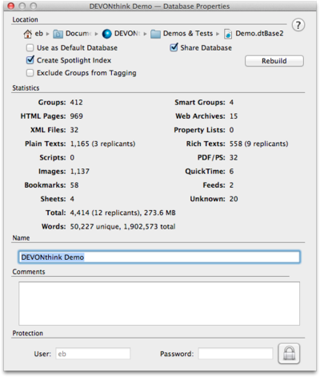

|
|
|
Database Properties |
|
The Database Properties panel defines preferences which are directly related to the database and not to the application in general. Open the properties panel using File > Database Properties for every open database including the global inbox.  Location This section of the properties panel shows the location of the database package and any additional options: Location: Double-click any part of the database location to reveal it in the Finder. Create Spotlight Index: Check to make this database available to Spotlight. Checking this option lets DEVONthink Pro Office create a folder in "~/Library/Cache/Metadata" that Spotlight uses for accessing the documents in the database. If you ever feel that this folder is out-of-sync with the database, click Rebuild to recreate this folder from scratch. When viewing Spotlight results in a window, make sure to have the Show all file extensions option in Finder's Preferences, Advanced tab unchecked. If this option is checked, the Finder displays the generic names of the metadata cache files instead of the name of the referenced document. Starting with version 2.0.6, DEVONthink Pro Office adds information to the Spotlight metadata that makes it possible to preview many file types directly from the Spotlight results window. Supported are text and rich text (RTF and RTFD), image, movie, audio, PDF, HTML, XML, and web archive files. DEVONthink Pro Office needs to be installed on the machine viewing the Spotlight results. You may need to rebuild the Spotlight index to activate this function.
Share Database: Check to make this database is searchable and browsable through the web server. Read only: Check to share this database through the web server as read-only, and to prevent visitors from modifying or deleting your documents. Exclude Groups from Tagging: Excludes all groups in this database from being used as tags. Ordinary tags can always be added to items using the Tag bar. Statistics This section displays some basic statistics about how many documents your database contains, file sizes, etc. Name and comments Name: Enter a name for your database here. It will appear in the title bar of every main window of this database.
Comments: Enter your own comments about the database here, e.g., a project description. Protection To prevent other people from opening DEVONthink Pro Office and accessing your data, click on the padlock button to unlock the entry fields, enter a user name and password, and then click on the padlock button again to lock your changes and hide the password.
|